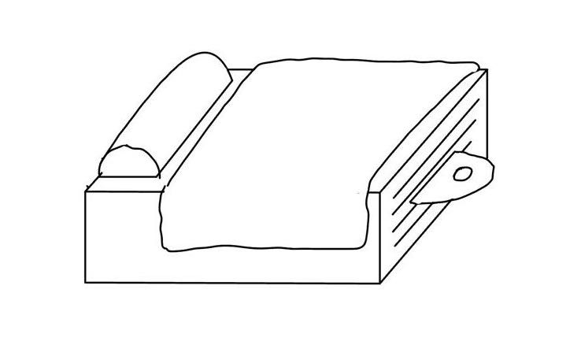

Gathering Ingredients
The engineering design process is similar to mathematical operations. Something we are already familiar with can lead to a completely new invention with a different function by using subtraction, addition, multiplication, and so on. Therefore, a good start to the design process can involve gathering things we are already familiar with. During the brainstorming process, I chose a bed and a cat pattern.